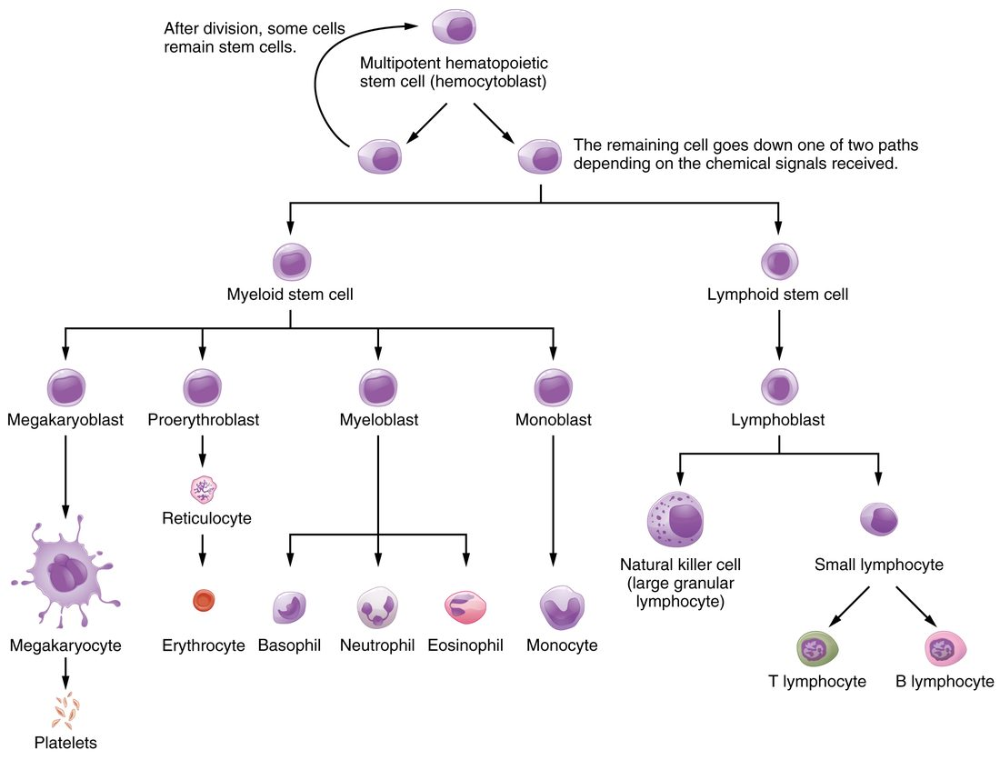

Blood looks like a single red liquid, but spin a tube of it and it separates into a straw-colored fluid and a column of cells. This page explains the composition of blood: plasma and the formed elements, what the plasma proteins do, how the hematocrit is measured and read, how serum differs from plasma, where every blood cell comes from, and the physical properties and functions that follow from all of this.
What blood is made of
Draw 5 mL of blood from a vein into a tube that contains a chemical to stop it clotting, and spin the tube in a centrifuge for a few minutes. The spinning presses the densest material to the bottom. Three layers appear (Figure 1):
- At the bottom: a dark red column of red blood cells, the densest part of blood.
- In the middle: a thin, pale layer, less than 1% of the tube. This is the buffy coat (buff = a pale yellowish color), made of white blood cells and platelets.
- At the top: a clear, straw-colored fluid, the plasma, about 55% of the tube.

You met blood as a connective tissue: cells scattered in a fluid matrix. The spun tube shows the two parts directly:
- Plasma (Greek plasma = something formed or molded) is the fluid matrix. It is mostly water, carrying proteins, salts, nutrients, gases, hormones and wastes.
- Formed elements are everything in blood that is a cell or a piece of a cell: red blood cells, white blood cells and platelets. They are called "elements" rather than cells because platelets are not whole cells; they are fragments broken off much larger cells in the bone marrow.
Whole blood means blood as it leaves the body, with nothing added or removed: plasma and formed elements together. The term matters in the clinic because blood banks usually split whole blood into its parts and give a patient only the part they need.
Hematocrit
The hematocrit (hemat- = blood, -crit = to separate) is the percentage of a blood sample's volume made up of red blood cells. It is also called the packed cell volume (PCV), because it is read from the packed red column after spinning. Typical reference ranges are about 37–47% in women and 42–52% in men; each laboratory sets its own.
Worked example 1: reading a hematocrit tube
Problem. A spun tube of blood is 80 mm tall from the bottom of the red column to the top of the plasma. The red column is 36 mm tall, and the buffy coat is too thin to measure. What is the hematocrit?
- Write the definition. Hematocrit = height of the red column ÷ total height of the blood, × 100%.
- Substitute. Hematocrit = 36 mm ÷ 80 mm × 100%.
- Calculate. 36 ÷ 80 = 0.45, and 0.45 × 100% = 45%.
Answer. 45%: within the normal range for either sex. The rest, 55%, is plasma, plus a buffy coat of well under 1%.
Figure 2 shows the measurement. Two things change a hematocrit, and a question about it always comes down to which one moved:
- The red cell volume changes. Fewer red blood cells lower the hematocrit; more raise it.
- The plasma volume changes. Losing plasma water, as in dehydration, raises the hematocrit even though no red blood cells were added. Adding plasma volume, as when a patient receives a large volume of salt solution through a drip, lowers it.
A hematocrit is a ratio, so it says nothing by itself about how much blood a person has. Right after a sudden bleed, cells and plasma are lost together and the hematocrit is unchanged. It falls over the following hours, as fluid moves into the blood from the tissues and dilutes the remaining cells.
Worked example 2: plasma volume from the hematocrit
Problem. A 70 kg man has a blood volume of about 5.0 L and a hematocrit of 45%. Estimate his red cell volume and his plasma volume.
- Red cell volume. 45% of 5.0 L = 0.45 × 5.0 = 2.25 L.
- Plasma volume. The rest is plasma (the buffy coat is too small to matter): 5.0 − 2.25 = 2.75 L.
- Check. 2.75 ÷ 5.0 = 55% plasma, which matches 100% − 45%.
Answer. About 2.25 L of red blood cells and 2.75 L of plasma.
Physical characteristics of blood
- Volume. Blood makes up about 7–8% of body weight: roughly 70 mL per kilogram, or about 5 L in a 70 kg adult. Men average 5–6 L and women 4–5 L, mostly because of body size.
- Color. Blood is always red. Red blood cells carrying a full load of oxygen make blood bright scarlet; with less oxygen it is dark red. Veins look blue through the skin because of how skin scatters and absorbs light, not because the blood inside is blue.
- pH. Normal arterial blood pH is 7.35–7.45, slightly alkaline. Buffers in the plasma and inside red blood cells hold it there.
- Viscosity. Blood is roughly four to five times as viscous as water. Most of its viscosity comes from the red blood cells, so a higher hematocrit makes blood thicker. You met viscosity as one of the factors that set resistance to flow: thicker blood meets more resistance.
- Temperature. Blood deep in your trunk is at the temperature of your trunk's organs. It is warmer than the skin and limbs it passes through, and cooler as it returns from them.
Plasma
Plasma is about 92% water. The water dissolves and carries everything else:
| Part of plasma | Share of plasma | Examples |
|---|---|---|
| Water | About 92% | The solvent for everything below; it also carries heat |
| Plasma proteins | About 7% | Albumin, globulins, fibrinogen |
| Electrolytes | Under 1% | Sodium, chloride and bicarbonate (the most abundant), potassium, calcium |
| Nutrients | Under 1% | Glucose, amino acids, fatty acids |
| Wastes | Under 1% | Nitrogen-containing wastes from protein breakdown, lactate |
| Gases and messengers | Under 1% | Dissolved oxygen, carbon dioxide and nitrogen; hormones |
The small molecules in plasma cross capillary walls easily, so their concentrations in plasma are close to those in the interstitial fluid around your cells. The plasma proteins are different: they are too large to cross most capillary walls, so they stay in the blood. That single fact explains most of what they do.
Plasma proteins
Plasma holds about 6–8 g of protein in every 100 mL. Almost all of it falls into three groups.
Albumin
Albumin (Latin albus = white, after egg white, which is rich in a similar protein) makes up about 55–60% of plasma protein. Your liver makes it. It does two main jobs:
- It holds water in the blood. Albumin is dissolved in the plasma but cannot cross the capillary wall. Like any solute a barrier holds back, it gives the plasma an osmotic pressure, and water is drawn toward it: water follows solute. Albumin supplies most of this osmotic pull because it is the most abundant plasma protein. When albumin falls, for example when a failing liver makes too little, less water is held in the blood and more leaves it for the tissues, which swell. You will measure this pull when you study capillary exchange.
- It carries things. Many substances that dissolve poorly in water ride bound to albumin: fatty acids, some hormones, calcium and many drugs. Bound molecules do not leave the blood as fast as free ones.
Globulins
Globulins (Latin globulus = little ball) make up about 35–38% of plasma protein. They are a mixed group, sorted by how they move in an electric field into alpha, beta and gamma globulins:
- Alpha and beta globulins are made mostly by the liver. Many are transport proteins, each binding one kind of cargo: iron, copper, certain hormones or fats.
- Gamma globulins are made by white blood cells, not the liver. They are the immune proteins that bind specific foreign molecules; you will meet them by their proper name in White blood cells and platelets.
Fibrinogen
Fibrinogen (fibr- = fiber, -gen = producing) makes up about 4–7% of plasma protein and is made by the liver. It is a clotting protein: when a vessel is torn, fibrinogen is converted into long, sticky, insoluble threads that knit together to form the mesh of a blood clot. How that conversion is triggered and controlled is the subject of a later topic in this chapter.
A small remainder, under 1%, includes enzymes, hormones and the other clotting proteins.
| Albumin | Globulins | Fibrinogen | |
|---|---|---|---|
| Share of plasma protein | About 55–60% | About 35–38% | About 4–7% |
| Made by | Liver | Liver (alpha, beta); white blood cells (gamma) | Liver |
| Main job | Osmotic pull that holds water in the blood; carrier | Transport (alpha, beta); immune defense (gamma) | Forms the threads of a clot |
| Present in serum? | Yes | Yes | No: used up in clotting |
Serum
Put a blood sample in a plain tube with nothing to stop clotting, and within about half an hour it sets into a jelly-like clot. The clot slowly shrinks and squeezes out a clear yellow fluid. That fluid is serum (Latin = whey, the watery part of milk left when cheese curdles).
Serum is plasma without its clotting proteins. Fibrinogen and the other clotting proteins were consumed in building the clot, and the cells were trapped in it. Everything else in plasma, including albumin, the globulins, glucose and electrolytes, is still there.
| Plasma | Serum | |
|---|---|---|
| How it is obtained | Blood kept from clotting, then spun | Blood allowed to clot, then spun |
| Fibrinogen and other clotting proteins | Present | Absent (used up by the clot) |
| Albumin, globulins, electrolytes, glucose | Present | Present |
| Can it still clot? | Yes, if the clotting blocker is reversed | No |
| Used for | Clotting tests; plasma for transfusion | Many chemistry and immune tests |
The formed elements
Each microliter (µL) of your blood, a volume about the size of a pinhead, holds millions of formed elements. They are not equal in number:
| Red blood cells | White blood cells | Platelets | |
|---|---|---|---|
| Number per µL | About 4–6 million | About 4,500–11,000 | About 150,000–450,000 |
| Whole cell? | Yes, but it loses its nucleus as it matures | Yes, with a nucleus | No: a fragment of a larger cell |
| Size | About 7.5 µm across | About 7–20 µm, depending on type | About 2–4 µm |
| Usual time in circulation | About 120 days | Hours to years, depending on type | About 7–10 days |
| Main job | Carry oxygen and some carbon dioxide | Defense against infection | Seal small breaks in vessels and start clotting |
For every white blood cell there are roughly 500 to 1,000 red blood cells, which is why the white layer in a spun tube is so thin. Each of the three gets its own topic next: red blood cells, then white blood cells and platelets.
Hematopoiesis: where blood cells come from
Most formed elements live days to months, so your body must replace them constantly. Each day your bone marrow makes roughly 200 billion red blood cells, 100 billion platelets and 100 billion or more white blood cells. You met this process briefly with bone: hematopoiesis (hemato- = blood, -poiesis = making), also written hemopoiesis. Here are its lineages.
Where it happens
In an adult, hematopoiesis happens in the red bone marrow, found in the flat bones and the ends of some long bones: the skull, vertebrae, ribs, sternum, hip bones, and the upper ends of the femur and humerus. In a child, nearly all bone marrow is red. With age, much of it in the long bones turns into fatty yellow bone marrow, which can turn red again if demand for blood cells stays high.
One stem cell, two branches
Every formed element descends from one kind of cell, the hematopoietic stem cell (also called the hemopoietic stem cell or hemocytoblast: hem- = blood, cyt- = cell, -blast = bud). It is a stem cell: when it divides, one daughter usually stays a stem cell, keeping the supply topped up, while the other begins to differentiate. That daughter commits to one of two branches (Figure 3):
- Myeloid stem cells (myel- = marrow, -oid = like) give rise to red blood cells, to megakaryocytes, which make platelets, and to most kinds of white blood cell.
- Lymphoid stem cells (from Latin lympha = clear water) give rise to one family of white blood cells, the ones at the heart of the immune system. You will meet them by name two topics from now.

Along each branch, cells pass through stages named with -blast, dividing and changing shape at each step. Cells at the late stages stop dividing, lose features they no longer use and take on the shape of their mature type.
Megakaryocytes make platelets
A megakaryocyte (mega- = large, kary- = nucleus, -cyte = cell) is one of the largest cells in your body. It copies its DNA over and over without dividing, so it ends up with a huge, many-lobed nucleus and a vast cytoplasm. It sits beside a marrow blood vessel and pushes long extensions of cytoplasm through the vessel wall. The flowing blood pinches these into thousands of fragments: platelets.
Growth factors steer the branches
Which cells the marrow makes, and how fast, is set by signaling molecules called hematopoietic growth factors (also hemopoietic growth factors). Each binds receptor proteins on particular stem and "blast" cells and makes them divide and mature:
- Erythropoietin (EPO), which you met with the other endocrine organs, is released by the kidneys when their oxygen supply falls. It speeds red blood cell production.
- Thrombopoietin (thromb- = clot, -poietin = maker) is made mainly by the liver, with some from the kidneys. It drives megakaryocytes to form and to shed platelets.
- Colony-stimulating factors (CSFs) and several interleukins are cytokines made by white blood cells, the cells lining blood vessels and marrow fibroblasts. They drive the production of white blood cells. They are named for how they were discovered: marrow cells grown in a dish form colonies when these factors are added.
Doctors use these factors as drugs. After chemotherapy, which kills dividing marrow cells, a colony-stimulating factor speeds the recovery of white blood cells. Erythropoietin is given to people whose kidneys make too little of it.
Functions of blood
Everything blood does follows from what it is made of and from the fact that it is pumped around a closed circuit of vessels past every tissue.
Transport
- Gases. Red blood cells pick up oxygen in the lungs and release it in the tissues; carbon dioxide travels the other way.
- Nutrients. Glucose, amino acids and fatty acids absorbed from the digestive tract, or released from stores, are carried to every cell.
- Wastes. Waste products of metabolism are carried to the kidneys, liver and lungs, which remove them.
- Hormones. Hormones travel in plasma, free or bound to carrier proteins, from the glands that release them to their target cells.
Regulation
- pH. Bicarbonate, phosphate and proteins in blood act as buffers, taking up or releasing hydrogen ions. This keeps blood pH within 7.35–7.45.
- Body temperature. Water holds a lot of heat. Blood flowing through warm, active muscles and organs picks up heat. When the vessels in the skin widen, more warm blood flows near the surface and loses heat to the air.
- Fluid balance. The osmotic pull of albumin and the salts in plasma set how much water stays in the blood and how much moves into the tissues.
Protection
- Against blood loss. When a vessel is torn, platelets and clotting proteins such as fibrinogen seal the break.
- Against infection. White blood cells and the immune proteins among the gamma globulins find and destroy microorganisms and damaged cells.